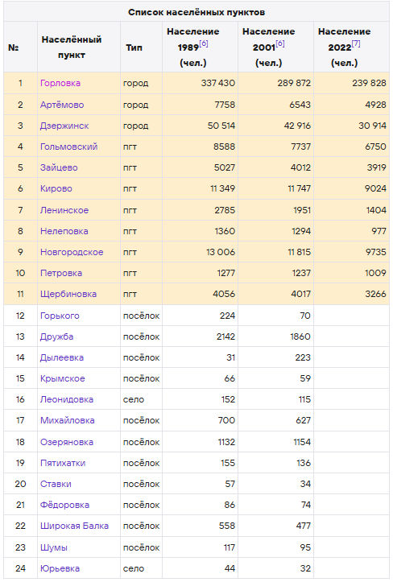
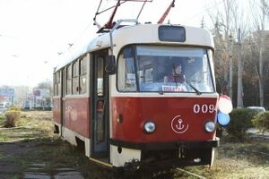
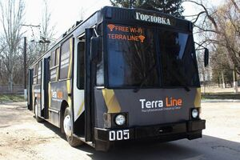

Географическое расположение Горловки
Расстояние до Донецка: по автодорогам — 37 км, по ж/д — 53 км.
Город находится на западных отрогах Донецкого кряжа. По территории города протекают 29 рек, но ни одна река его не пересекает. В городе находятся истоки таких рек, как Лугань (приток Северского Донца), Бахмут (приток Северского Донца), Корсунь (приток Крынки). Все они — реки бассейна Азовского моря.
В их составе:
- Урочище Софиевское
- Балка Поклонская
Также это главный угольный бассейн восточной Европы.
Карта города
Административное деление
В городской округ входят 24 населённых пункта, в том числе:
- 11 городских пунктов, среди которых 3 города и 8 посёлков городского типа.
- 13 сельских населённых пунктов, в числе которых 2 села и 11 посёлков.
Общественный транспорт
Автобус
Автобусные рейсы из Горловки в Ростов-на-Дону запустили с 21 сентября 2023 года. Он проедет через несколько населённых пунктов, в том числе Енакиево, Ждановку, Кировское и Шахтёрск.
Горэлектротранспорт
(КП «Горловское ТТУ»):
Трамвай
Горловский трамвай был открыт 7 ноября 1932 года. По состоянию на 1 января 2022 года имеется 3 маршрута, 56,7 км рельс и 14 (10 рабочих) вагонов.
Маршруты:
- 1 — Ж/д вокзал — шахта им. Ленина
- 7 — 245 квартал — п. Штеровка
- 8 — Шахта «Калинина» — 245 квартал

Трамвай Горловка ДНР Россия
Троллейбус
Горловский троллейбус — общественный транспорт в городе Горловка Донецкой Народной Республики, была открыта 6 ноября 1974 года. По состоянию на 2013 год имеется 4 маршрута и 54,3 км сети
Маршруты:
- 1 — Фабрика трикотажного полотна — станция Никитовка (времено закрыт)
- 2 — Жилмассив «Строитель» — Жилмассив «Солнечный»
- 3 — Жилмассив «Строитель» — Химзавод
- 4 — Жилассив «Строитель» — станция Никитовка (времено закрыт из-за проведения боевых действий в регионе)
- 1а — Троллейбусное депо — ДК Ветеран

Троллейбус Горловка ДНР Россия
Железнодорожный транспорт
Железнодорожный узел. На территории города находятся семь железнодорожных станций:
- Никитовка;
- Горловка;
- Трудовая;
- Байрак;
- Терриконная;
- Майорская;
- Пантелеймоновка.